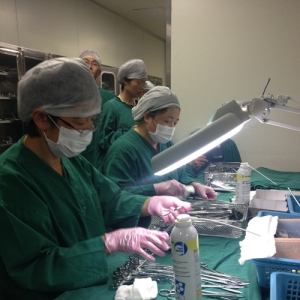

医院消毒供应室的发展与管理
| 医院供应室作为医院的重要消毒灭菌场所，又是预防和减少医院感染发生的重要科室，其工作质量直接影响医疗护理质量和病人的安危。但是，它也是医院感染的“源头”，工作稍疏忽将危及患者的生命安全，甚至造成医院感染和热原反应的发生。供应室要适应医疗卫生事业的发展，就必须从物品器械的“消、洗、消”到设备技术更新;从质量控制到职工素质都需要提高。因此，加强中心供应室工作各环节的质量监控，是确保无菌物品质量的重要措施，也是供应室工作的核心。  1 医院消毒供应室的现状及原因分析 1.1 建筑布局不符合要求，从卫生局卫生监督所检查结果来看，目前医院消毒供应室工作与国家标准和规范要求还存在很大差距。医院消毒供应室均未设在相对独立的区域，路线上做不到强制性通过的方式。人流、物流的路线没有严格做到由污染到清洁，存在着交叉逆行或污染区、清洁区和无菌区分区不明确。功能间不能满足工作需要或根本不使用。 1.2 年龄结构缺乏梯度，从调查统计结果发现，供应室职工普遍存在年龄偏大、文化程度偏低、身体偏差等情况。接受再教育学习机会少，有的同志认为供应室是熟练工种，专业技术性不强，这些因素造成知识面窄，专业知识老化，跟不上消毒供应学科的发展。 1.3 工作人员自我防护意识薄弱，供应室每天都要回收大量的一次性输液器、注射器及各种器械，对污染器械的清洗、消毒、包装大部分都是手工操作，工作人员常被各种锐器划伤，化学消毒剂灼伤等，这些原因的发生与自我防范意识薄弱，工作环境凌乱，不遵守操作规程以及对危害认识不足有关。 1.4 消毒灭菌物品操作不规范，去污清洗效果达不到规范要求。灭菌包过大过重，压力锅内各种物品不按要求摆放，包与包之间没有空隙，敷料类包与金属类（如贮槽）紧贴在一起，金属类物品中间未用吸水巾分隔所致。湿包偶尔发生，使物品达不到灭菌效果。个别医院为了降低成本，减少消毒次数，在下排气压力灭菌器装载量超过容积量的80%。 1.5 质量监控技术没有完全到位 没有真正做到每一锅、每一个包、消毒浸泡液、蒸馏水，一次性医疗器具的每一个批号，都作细菌培养，源、微粒子监测。灭菌后物品不及时放入无菌间，直接在灭菌室发放。消毒物品运送车无封闭或由使用科室人员直接取走。 2 综合分析造成以上现状的原因是多方面的 2.1 是部分医院领导重视不够，受市场经济浪潮的冲击影响很大，领导大部分精力都在临床、科研或经济效益好和创收高的科室，在解决具体问题或困难时，政策明显向临床倾斜。对供应室工作重视不够.不利于供应室的发展和管理。 2.2 医院单纯从追求经济效益出发，尽可能地把有效的房屋、资金用于创收科室，而对消毒供应室等不能创收的部门尽可能的压缩开支。 2.3 把业务科室落聘人员或无法安置的人员安排到消毒供应室工作，造成人员队伍不稳定，消毒灭菌相关业务知识掌握不熟练。 3 决策 3.1 按设计原则供应室建筑面积与医院规模适应系数1:0.8~1.0的要求设计消毒供应室。建立以人为本的工作环境;采用先进、现代化的消毒设备，确保工作质量，提高工作效率;保证医院供应的需要;避免污染与干扰，方便工作;保证工作人员的防护需要。 3.2 加强消毒供应室人员学习和培训，根据专业特点进行人员培训，培训各岗人员熟练掌握各种灭菌药械的性能、操作规程与浓度检测方法，确保灭菌物品的合格率达到100%。使他们能够及时掌握消毒灭菌的有关要求。加强职业道德教育，消毒灭菌质量关系到医疗护理质量和病人的安危。供应室工作的每道工序与环节、每一次监测都是单独操作完成的，每件器械要经过浸泡消毒、刷洗、擦干上油、包装消毒，才能供病人使用。如果其中一道工序不认真，或消毒灭菌质量不过关，就可能危及病人健康。所以.供应室工作人员必须具有高度的责任感.认真负责的工作态度。要经常教育职工坚持“以病人为中心”增强护理道德责任感，严格遵守无菌操作原则，才能保证无菌物品的质量。 3.3 强化灭菌监测方法的管理 试验用于真空压力蒸汽灭菌器冷空气排除效果实验，能准确反映设备真空度和温度压力，蒸汽质量，接触物品的状况。标准测试包采用透气性好的棉布制作，结果与灭菌包相同。测试纸均匀一致变色，说明冷空气排除良好，灭菌锅可以使用；反之，灭菌包、柜室内有冷空气残留，需检查测试失败原因，直至测试通过后该锅方能使用。 化学指示卡、指示胶带监测法，每锅柜室内放置5片化学指示卡，即上、中、下、前、后，大包内的中央也放置化学指示卡，包外用化学指示胶带封口。经过一个灭菌周期完毕，对照标准色是否灭菌合格。该指示胶带只用来与灭菌包进行区别。 生物剂监测法，生物指示剂监测，是判断灭菌成功的监测方法。将两个生物指示剂（嗜热脂肪杆菌芽胞）置于标准试验包中心部位，后将标准试验包置于灭菌柜内排气口上方。经过一个灭菌周期后，将生物指示剂取出培养。此项工作由检验科来做，供应室每月协作监督来完成，并记录。 3.4 供应室物品网络管理 现代医学管理学明确规定，供应室的布局和分区必须是污染区、清洁区、无菌区、严格分开。每个区域之间要有缓冲区，物品的传递以窗式传递为主，在无菌间取出的物品不能再回无菌间。通过微机联网形式，供应室根据打印清单名称及数量下送下收物品。在紧急情况下，科室可以将需用物品或借用物品输入微机，电话通知即可。避免了与临床的纠纷，这样有利于科护士长管理，避免了物品的流失，同时也避免了怀疑供应室物品送少、送错、多记帐等现象。通过微机联网的形式给临床提供服务，临床要什么给什么，要多少给多少，减少了浪费和无菌物品的返流现象，符合了医院院内感染的要求。 综上所述，中心供应室医院唯一的医用器材灭菌供应单位，也是医院感染控制的重点部门。医院为了适应现代医学及医疗技术和管理的发展，建设现代化医院，就必须要有一流的的中心供应室。全国各大医院正在向中心供应室发展。迫切需要加强医院中心供应室的建设管理与使用管理，制定国内统一的中心供应室建设标准，装备标准，技术标准以及运行管理标准。消毒供应室的现代化管理，是一项全过程、全员性、全方位的管理工作，通过强化职工素质教育，认真执行各项操作规程，消毒灭菌合格率达到100%。使供应室管理逐步走上规范化、标准化、科学化的运行轨道。 |